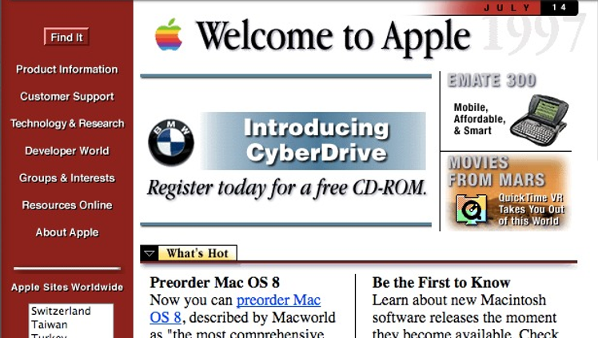
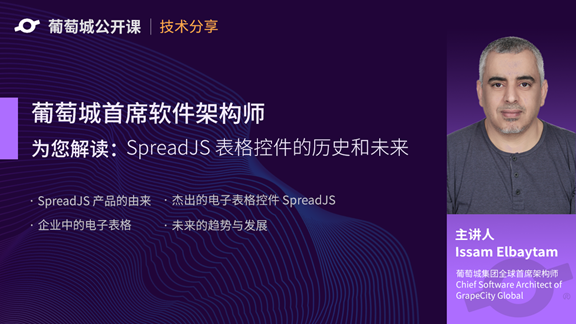

本文由葡萄城技术团队于博客园原创并首发
转载请注明出处：葡萄城官网，葡萄城为开发者提供专业的开发工具、解决方案和服务，赋能开发者。
前端技术的发展日新月异，过一段时间就会出现新的框架、工具、插件，伴随着十几年的发展，前端领域已经告别了野蛮生长的时期，越发表现出成熟和现代化，引领了整个技术行业的潮流，那么让我们在文中过一遍前端发展中一些重要的节点。
针对浏览器开发，代码在客户端浏览器运行。
这里提到的“三剑客”指的不是某公司出品的三个产品，而指的是在前端开发过程中用到的三种技术：HTML、CSS、JavaScript。
是HyperText Markup Language的缩写， HTML是前端开发的基础，用户看到网页中的结构和基础样式都是由HTML来提供的，目前HTML的标准已经于2014年被推进到了HTML5。
是Cascadeing Style Sheets的缩写，它能对网页中的元素位置、排版、外观进行精准的像素级控制，能够为用户提供更丰富的网页样式呈现。
JavaScript 一个客户端脚本语言，作为一个弱类型语言，它能为网页用户增加一些有限的动态交互效果。
随着JavaScript被发明，前端开发进入了小前端时代，那么JavaScript为什么会被发明出呢？
1995年，网上冲浪开始兴起，但当时用户还是通过一条28.8 kbit/s的调制解调器连接互联网，例如用户如果要简单的做注册表单验证，和服务器交互一轮就需要近30秒。让我们试想一下，在经过了半分钟的等待后，服务器告诉你你的一个字段忘填了，是怎样的一种心情。

（图片来自网络）
所以基于客户端运行的脚本语言需求逐渐增大，由Netscape于1995年开发的JavaScript前身LiveScript应运而生，后来为了傍Java这个时髦词汇，LiveScript更名为了JavaScript。有了JavaScript 客户端也可以做逻辑判断，动态交互等行为。
所以由HTML为骨架、CSS为外貌、JavaScript为交互的搭配正式被固定下来了。后来随着Ajax技术的兴起，Web由1.0时代，迈入了2.0时代，web页除了基础的内容展示功能外，还具备了数据处理、动态效果、优秀的用户体验等功能。
随着对前端动效、数据交互的需求量越来越强，jQuery跨浏览器的工具库应运而生，它为Web带来了新的活力，使开发者能更方便的开发操作DOM，数据交互，动态交互等行为，开发者的思路被进一步打开。
后来，谷歌V8引擎发布，Node诞生，为前端开发提供了使用同一语言实现全栈开发的机会（JavaScript不再是一个只能写页面交互的前端语言）。随后React、Angular、Vue 等 MVVM 前端框架的出现，使前端实现了项目真正的应用化。前端迎来了大前端时代，前端开发的从业者也终于告别了 “切图仔”的称谓，因为他们有了全新的职称“前端开发工程师”。
2009年开始，大屏智能手机开始陆续出现，到后来进入了4G时代， 人们对Web产品的要求和期望越来越高，Web开发从业者不仅需要面对的是PC端单方面的需求，甚至在面对移动端、PWA（小程序）、app hybird平台的需求也成了家常便饭。
因为业务需求的不断变化，这导致了Web应用需要不断的提升迭代开发的速度，缩短发布周期。这一点企业中的开发者也在同样面对着。同时，一位名叫Issam Elbaytam的美国工程师也同样注意到了，他曾多年在.NET领域持续积累，曾设计、开发了多款知名.NET控件，面对这样的技术风口，他在想现在既有的.NET控件是不是可以全面转到前端平台上？
带着这样的问题，他投入了新产品的设计、开发工作中，开发过程中他也注意到了，大部分用户在处理数据、统计数据时，还是更习惯于使用Excel来做，Excel凭借着出色的计算性能、直观的数据分析和图表成为数据统计领域不可或缺的软件之一。但同样Excel也具有它的短板，例如：和企业已有应用接驳困难、无法完全脱离Office套件、高昂的授权价格、无法分布式修改数据等。
在了解了这些短板后，他开始想是不是可以用纯JavaScript开发一套和Excel类似的开发工具供开发者使用，这样全面满足了用户进一步把应用迁移B/S的需求，也可以完全脱离Office套件使用，同时也降低了因为快速迭代的发布周期。终于，在2015年，经过了几年的开发，SpreadJS终于应运而生。借助SpreadJS，用户可以以不到100行代码即可在前端实现Excel全部功能，并可以实现一次开发，多端使用的目的。
迄今已为国内外知名企业和机构的服务赋能，例如：天弘基金、华为、中国平安、招商银行、腾讯、苏宁易购等，为他们实现了Web Excel组件开发、数据填报、在线文档、图表公式联动、数据可视化等核心业务场景。
过几天，我们将会邀请Issam Elbaytam为我们带来一场线上直播，日期会在2019-11-20（星期三） 下午14:00准时开始，报名地址：https://live.vhall.com/347833693
由他来为我们讲讲他为何如此痴迷于技术研究，他的初心是什么，面对当今大热的HTML5、JavaScript，以及区块链等新兴技术，他又有哪些不同的看法和观点呢？

葡萄城员工对Issam Elbaytam的评价：
Issam 坦言道,“中国开发人员喜欢使用最新和最好的技术， SpreadJS一定会为他们的项目提供强大的支撑，并在财务、预算、工程、统计等领域的信息系统开发中，通过强大的计算引擎和灵活的数据可视化呈现，为商业表单控制面板提供更为丰富、有效的内容信息。”。
随着JavaScript和浏览器的不断发展，基于Web应用程序的系统开发提供了良好的性能支持和运行环境基础。相信随着未来前端技术的发展，以及不断更新迭代的Web程序集，这些技术将为用户提供更加前所未有且越来越强大的解决方案。他对未来前端领域的发展也充满了期待。